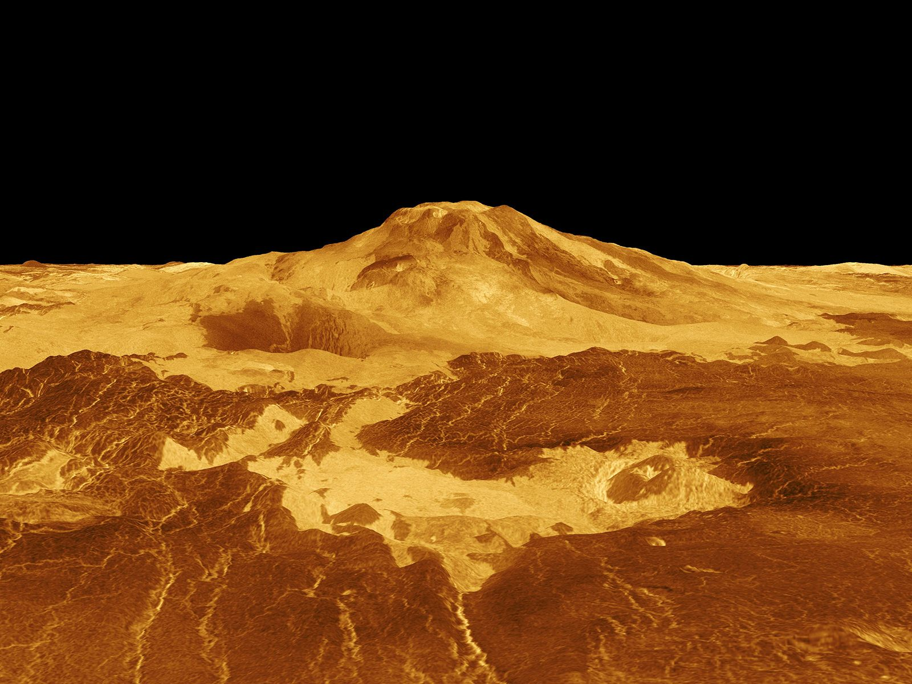
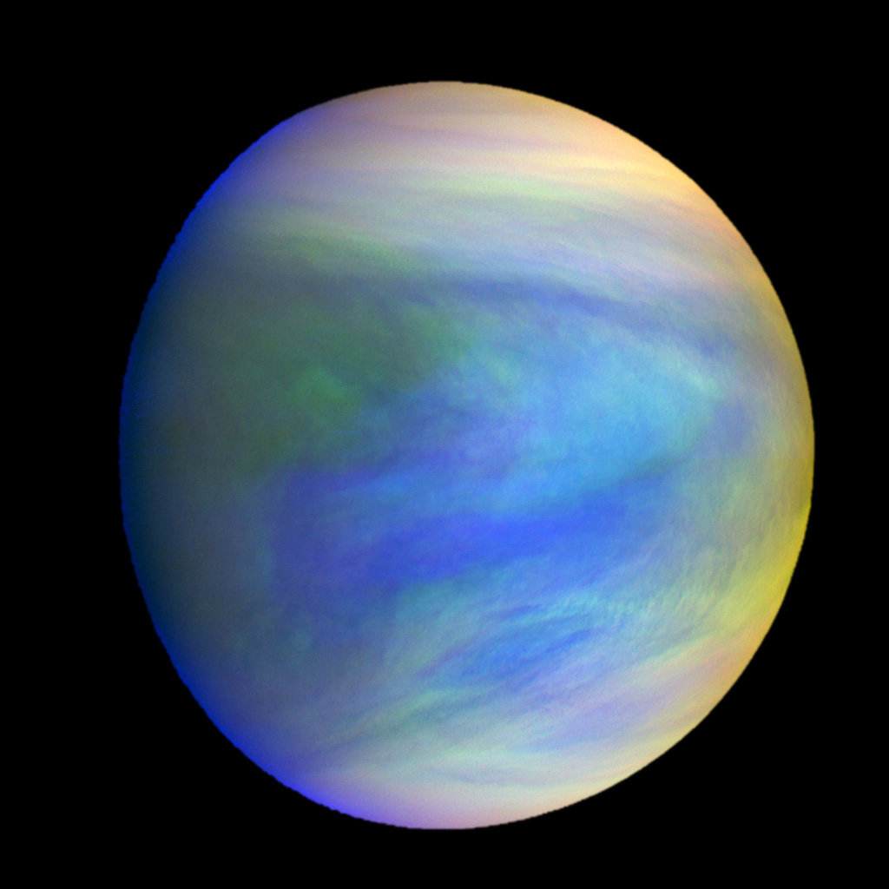
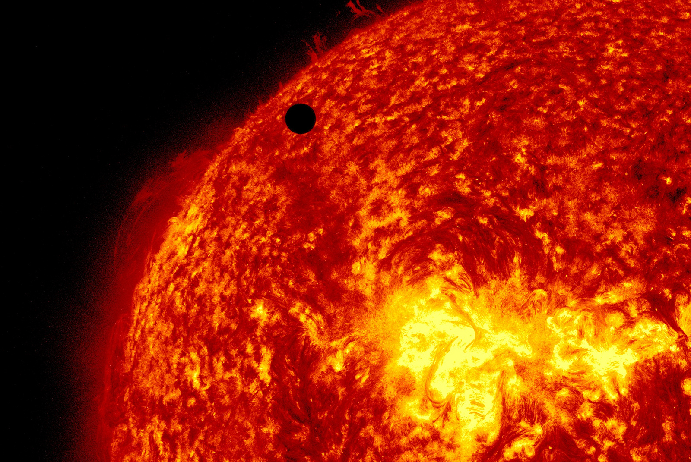

• Type : Planète tellurique (rocheuse)
• Diamètre : 12 104 km (environ 95% de celui de la Terre)
• Distance du Soleil : 108,2 millions de km
• Durée d'un jour : 243 jours terrestres (rotation rétrograde)
• Durée d'une année : 225 jours terrestres
• Nombre de satellites : 0
• Température : Environ 462°C (la plus chaude du système solaire)
• Atmosphère : Très dense, composée principalement de dioxyde de carbone (96,5%) et d'azote (3,5%)
Vénus est souvent appelée la "sœur jumelle" de la Terre en raison de sa taille et de sa masse similaires. Cependant, malgré ces ressemblances, Vénus est un monde radicalement différent et hostile. Son nom vient de la déesse romaine de l'amour et de la beauté, car elle apparaît comme l'objet le plus brillant dans le ciel nocturne après la Lune. Vénus est l'objet céleste le plus brillant visible depuis la Terre (après le Soleil et la Lune), ce qui explique pourquoi elle est connue depuis l'Antiquité comme "l'étoile du matin" ou "l'étoile du soir", selon qu'elle apparaît avant le lever ou après le coucher du Soleil.
Vénus est l'exemple parfait d'un effet de serre incontrôlé. Son atmosphère extrêmement dense, composée principalement de dioxyde de carbone, piège la chaleur du Soleil, créant des températures de surface d'environ 462°C - suffisamment chaudes pour faire fondre le plomb. La pression atmosphérique à la surface est écrasante, équivalente à celle que l'on trouve à 900 mètres sous l'eau sur Terre. Une autre particularité de Vénus est sa rotation rétrograde (d'est en ouest), contrairement à la plupart des planètes du système solaire qui tournent d'ouest en est. De plus, sa rotation est extrêmement lente : un jour vénusien dure 243 jours terrestres, soit plus que son année (225 jours terrestres).
L'exploration de Vénus a commencé dans les années 1960 avec les missions soviétiques Venera et les missions américaines Mariner. Venera 7 a été la première sonde à réussir un atterrissage sur une autre planète en 1970, envoyant des données pendant 23 minutes avant d'être détruite par les conditions extrêmes. La mission Magellan de la NASA (1989-1994) a cartographié 98% de la surface de Vénus à l'aide d'un radar, révélant un paysage dominé par des volcans, des plaines de lave et d'étranges formations tectoniques. Plus récemment, la mission Venus Express de l'ESA (2005-2014) a étudié l'atmosphère et la surface de la planète. De nouvelles missions sont prévues pour explorer davantage cette planète énigmatique, notamment DAVINCI+ et VERITAS de la NASA, ainsi que EnVision de l'ESA, toutes prévues pour être lancées dans les années 2020-2030.
La surface de Vénus est relativement jeune (environ 500 millions d'années) et présente peu de cratères d'impact, suggérant un resurfaçage global périodique, probablement dû à une intense activité volcanique. La planète compte plus de 1 600 volcans majeurs et d'innombrables petits. Parmi les formations géologiques remarquables figurent les "tesserae", terrains fortement déformés qui pourraient être les plus anciennes roches de la surface, et les "coronae", structures circulaires probablement formées par des remontées de magma. Vénus ne possède pas de tectonique des plaques comme la Terre, mais sa surface montre des signes de déformation tectonique importante. Malgré sa proximité avec la Terre, Vénus reste mystérieuse en raison de son atmosphère opaque qui empêche l'observation directe de sa surface. Seules les techniques radar et les sondes spatiales nous permettent d'étudier ce monde fascinant et extrême.

Image radar de la surface de Vénus montrant des coulées de lave (Mission Magellan)

Vue ultraviolette des nuages d'acide sulfurique dans l'atmosphère supérieure de Vénus

Transit de Vénus devant le Soleil, un phénomène rare qui ne se reproduira qu'en 2117
Chez Cosmos Explorer, nous proposons plusieurs façons de découvrir et d'explorer la planète Vénus :
• Observation astronomique : Vénus étant l'objet le plus brillant du ciel nocturne après la Lune, nous organisons régulièrement des sessions d'observation pour admirer ses phases.
• Exploration virtuelle : Notre simulateur de réalité virtuelle vous permet de "descendre" à travers l'atmosphère dense de Vénus et d'explorer sa surface volcanique comme si vous y étiez.
• Exposition interactive : Découvrez notre modèle à échelle réduite de l'atmosphère vénusienne et expérimentez les effets d'un effet de serre extrême.
• Conférences thématiques : Participez à nos présentations sur Vénus, son évolution et les leçons qu'elle nous enseigne sur le changement climatique.
Pour plus d'informations sur nos programmes d'exploration de Vénus, consultez notre page d'exploration ou contactez-nous.